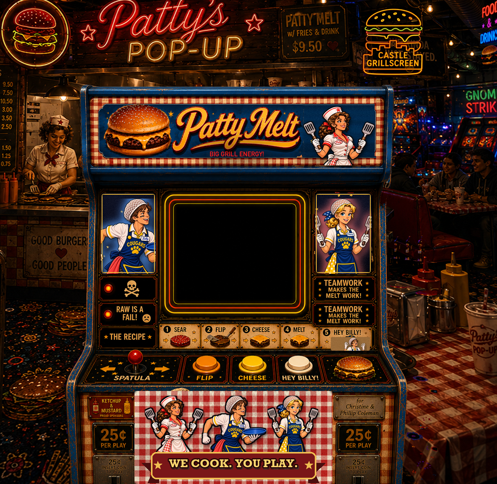

PATTY MELT
BIG GRILL ENERGY
◄ SPATULA ►
FLIP
SPACE
CHEESE
C
TOAST
X
HEY BILLY!
B
25¢ PER PLAYANDERS APPROVED
ANDERS & PARTNERS LLCfor Christine & Phillip Coleman
CLICK TO SKIP
SCREEN REGISTRATION
left34%
top21.5%
width32%
height26%
align the dashed box to the cab screen, then SAVE. type "rect" to close.